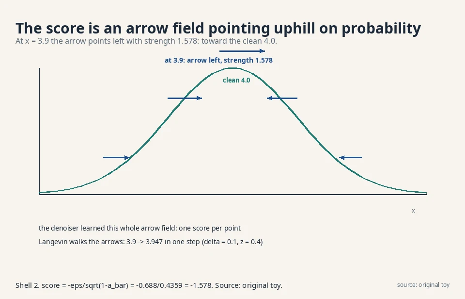
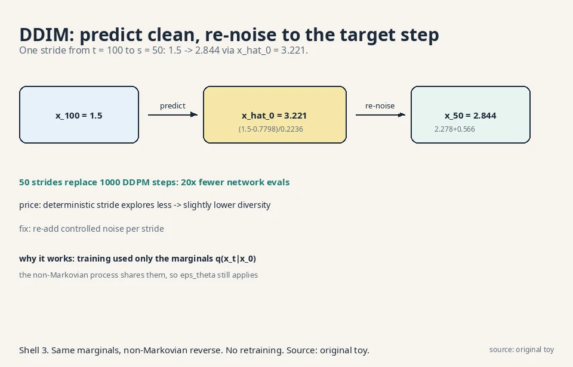
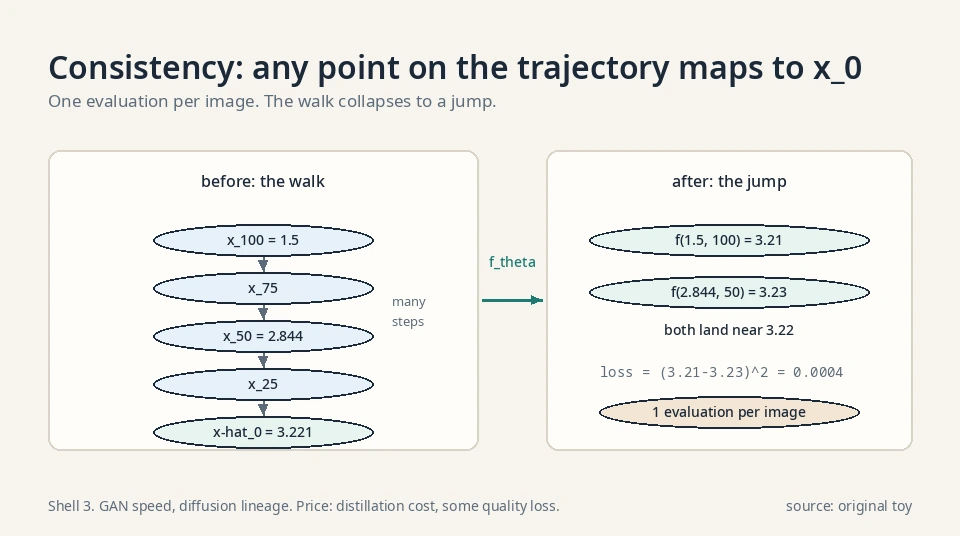
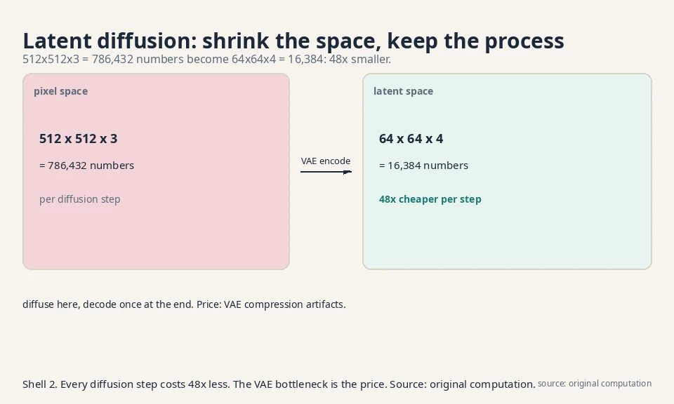

Lecture 10: Scores, Shortcuts, and the Autoregressive Family
Video blocked (ad-blocker or local file mode).
Watch on YouTubeVideo not loading? Watch on YouTube
The lecture video for this lesson: the denoiser as a score predictor. Timestamps in the text link to the exact moment.
The task: what did the denoiser really learn?
Lesson 9 trained ε_θ to predict added noise. The W9 lectures step back and ask what that means. Recall the equivalence: predicting ε is predicting the score, the gradient of the log-density:
score(x_t) = grad log p(x_t) = -epsilon / sqrt(1 - a_bar_t)
All logs in this lesson are natural logs (base e). The score is an arrow at every point, pointing toward higher probability. In the Lesson 9 toy: −0.688/0.4359 = −1.578. At x_2 = 3.9, the arrow points left with strength 1.578: probability increases toward smaller x. The denoiser learned a map of arrows covering the whole noisy space. That reframes everything: generation is hill-climbing on probability.

Tweedie’s formula: the denoiser’s best guess
The score gives the single best guess of the clean image for free. Tweedie’s formula says the posterior mean of x_0 given x_t is:
E[x_0 | x_t] = ( x_t + (1 - a_bar_t) * score(x_t) ) / sqrt(a_bar_t)
Work it on the toy: x_t = 3.9, score = −1.578, ᾱ_t = 0.81.
E[x_0 | x_2] = ( 3.9 + 0.19 * (-1.578) ) / 0.9
= ( 3.9 - 0.300 ) / 0.9
= 3.600 / 0.9 = 4.000
The denoised estimate is 4.000: the true clean value 4.0, recovered to three decimals from the noisy 3.9. The score pointed left with strength 1.578, and Tweedie converts that arrow into a location. DDIM’s x̂_0 prediction (below) is exactly this formula with the learned score. One precondition: the formula needs the true score. With a learned score it is an estimate, and its error is the sampler’s error.
Denoising score matching: the older objective
Before DDPM, the score-matching literature trained scores directly. Denoising score matching (Vincent 2011): corrupt x with Gaussian noise of variance σ² to get x̃, then train s_θ(x̃) to match the known score of the corruption, (x − x̃)/σ²:
L = E[ || s_theta(x_tilde) - (x - x_tilde)/sigma^2 ||^2 ]
Work it: x = 4.0, x̃ = 3.9, σ = 0.1. The target is (4.0 − 3.9)/0.01 = 10. If the network outputs 8, the loss is (10 − 8)² = 4. The lecture’s point: DDPM’s noise-prediction loss trains the same object. Lesson 9’s ε_θ and this lesson’s s_θ are the same network in different clothes. Two communities, one arrow field, one loss family.
First attempt: follow the arrows naively
Langevin dynamics
If the score points uphill, sample by walking uphill: start anywhere, take small steps along the score, add a little noise so you explore instead of collapsing to the peak. This is Langevin dynamics:
x <- x + (delta/2) * score(x) + sqrt(delta) * z, z ~ N(0,1)
Worked: 3.9 → 3.947
Try it on the toy. x = 3.9, score = −1.578, δ = 0.1, draw z = 0.4:
x <- 3.9 + 0.05 * (-1.578) + 0.316 * 0.4 = 3.9 - 0.079 + 0.126 = 3.947
The point moved from 3.9 to 3.947: uphill toward the clean 4.0, with exploration noise. Repeat thousands of times and the walk’s positions follow p(x). This is the older score matching literature’s sampler, and the lecture’s point is that DDPM training already learns exactly the object it needs. Two communities, one arrow field.
Where naive Langevin breaks
Where naive Langevin breaks: it needs tiny steps and thousands of them, and the step size δ is fiddly. Too large: the walk diverges. Too small: it never arrives. DDPM’s ancestral sampler (Lesson 9) is the stabilized, scheduled version of this walk. The schedule is the fix for the fiddliness: instead of one δ, a planned sequence of noise levels that anneals the walk to the answer.
Annealed Langevin: the schedule fixes the fiddle
Annealed Langevin dynamics runs the walk at a sequence of noise levels σ_1 > σ_2 > … > σ_L, finishing near zero noise. At high noise the smoothed distribution is easy to walk (no sharp peaks). Each level’s samples seed the next. The step size scales with the noise: δ_l proportional to σ_l².
One step at σ = 1.0 on a standard Gaussian target. The score of N(0,1) at x is −x. At x = 2.0 the score is −2.0. With δ = 0.1 and z = 0.5:
x <- 2.0 + 0.05 * (-2.0) + 0.316 * 0.5 = 2.0 - 0.100 + 0.158 = 2.058
The walk explores broadly at high noise, then the schedule drops σ and the walk settles. This is the sampling half of the score-based modeling paper (Song and Ermon 2019): train one score network conditioned on σ, anneal from high to low. DDPM’s 1000-step sampler is this idea with the noise levels renamed t = 1000..1.
The key question
The sampler still costs T steps. Can we take bigger strides without retraining?
The new idea: DDIM strides
The marginals are all training used
DDIM (Denoising Diffusion Implicit Models) observes that training only ever used the marginals q(x_t|x_0): the closed-form jump from Lesson 8. The Markov step-by-step chain was one choice consistent with those marginals. A non-Markovian process with the same marginals trains the identical ε_θ. And with the non-Markovian form, the reverse can skip steps: jump from t = 100 to t = 50 in one stride, deterministically.
The stride formula
The stride formula: predict the clean x_0 from x_t via ε_θ, then re-noise it to the target step s:
x_hat_0 = ( x_t - sqrt(1 - a_bar_t) * e_theta ) / sqrt(a_bar_t) x_s = sqrt(a_bar_s) * x_hat_0 + sqrt(1 - a_bar_s) * e_theta
Precondition: ᾱ_t > 0 (division by √ᾱ_t). In practice ᾱ_T is tiny but nonzero (0.00004 on the linear schedule), so the stride from T is steep but defined.
Worked: 1.5 → 2.844 in one stride
Work it. t = 100, s = 50, ᾱ_100 = 0.05, ᾱ_50 = 0.5, x_100 = 1.5, ε_θ = 0.8:
x_hat_0 = (1.5 - sqrt(0.95)*0.8) / sqrt(0.05)
= (1.5 - 0.7798) / 0.2236 = 3.221
x_50 = sqrt(0.5)*3.221 + sqrt(0.5)*0.8
= 2.278 + 0.566 = 2.844
One stride: 1.5 → 2.844, landing where 50 DDPM steps would have gone. Fifty strides replace a thousand steps.
The price: less diversity
The price: the deterministic stride (no z wobble) explores less, so diversity drops slightly. Re-adding controlled noise per stride recovers most of it. Same network, faster sampler, no retraining. The decision rule: use DDIM strides when latency matters (interactive generation), DDPM steps when diversity matters most. The network never changes. Only the walk does.

The η family: from DDIM to DDPM
The deterministic stride is one point on a dial. The DDIM paper adds per-stride noise with a knob η:
sigma_t(eta) = eta * sqrt((1 - a_bar_s)/(1 - a_bar_t))
* sqrt(1 - a_bar_t/a_bar_s)
x_s = sqrt(a_bar_s)*x_hat_0 + sqrt(1 - a_bar_s - sigma^2)*e_theta
+ sigma * z
η = 0 is the deterministic DDIM stride. η = 1 recovers DDPM’s stochastic sampler. Work η = 1 on the toy (t = 100, s = 50, ᾱ_100 = 0.05, ᾱ_50 = 0.5):
sigma = 1 * sqrt(0.5/0.95) * sqrt(1 - 0.05/0.5)
= 0.7255 * 0.9487 = 0.688
The stride becomes x_50 = 2.278 + 0.130 + 0.688·z: mean 2.408 plus a 0.688 wobble. Note the mean moved down from the deterministic stride’s 2.844: the η = 1 noise steals weight from the ε_θ term (its coefficient shrinks from √0.5 = 0.707 to √(1−ᾱ_s−σ²) = 0.162). The decision rule: η = 0 for speed and reproducibility, η = 1 for maximum diversity. The network never changes. Only the walk does.
The probability flow ODE
Every stochastic diffusion has a deterministic twin. The probability flow ODE removes the random wobble but keeps the same marginal distributions at every t:
dx = [ f(x,t) - 0.5 * g(t)^2 * score(x,t) ] dt
No z term. The same ε_θ supplies the score. Because the marginals match, the ODE and the SDE describe the same noising process: one with dice, one without. DDIM’s deterministic stride is this ODE discretized. The practical wins: exact likelihood computation (the ODE is invertible: run it forward to get the latent, read off the change-of-variables), and deterministic generation (same x_T, same x_0, every time). The price is the same as DDIM’s: less exploration than the stochastic sampler.
Worked: one Euler step of the probability flow ODE
Work the ODE on numbers. Take the drift f(x,t) = −0.2·x, the diffusion coefficient g(t) = 0.5, and the score from this lesson’s toy, score(x,t) = −1.578. At x = 3.9:
dx/dt = f(x,t) - 0.5 * g(t)^2 * score(x,t)
= -0.2*3.9 - 0.5*0.25*(-1.578)
= -0.78 + 0.197 = -0.583
One Euler step backward in time (dt = −0.1):
x <- 3.9 + (-0.583)*(-0.1) = 3.958
Read the two terms. The drift −0.78 pulls toward the noise endpoint (the origin): pure noising, no data. The score term +0.197 pushes uphill toward the data (the clean 4.0). The ODE walks the balance of the two with no z term: run the same x_T twice and you get the same x_0 twice. That determinism is what makes the ODE invertible for likelihood computation.
Consistency models: one step
Consistency models (Song et al. 2023) push the stride idea to its limit: a network f_θ(x_t, t) that maps any point on a diffusion trajectory directly to its origin x_0. The consistency property: f_θ(x_t, t) = f_θ(x_s, s) for any two points on the same trajectory. Train it by distilling a trained diffusion model (or from scratch with a consistency loss). Sampling: draw x_T, evaluate f_θ once, done. One network evaluation per image: GAN speed, diffusion lineage. The price is distillation cost and some quality loss versus the teacher. FLUX.1-schnell’s 1–4 step sampling is this family’s commercial form (adversarial distillation rather than pure consistency, same goal: collapse the walk).

Worked: one consistency jump
Take the DDIM toy trajectory: x_100 = 1.5, x_50 = 2.844, origin x̂_0 = 3.221. A trained consistency model f_θ maps any trajectory point to the origin. Say it outputs f_θ(1.5, 100) = 3.21 and f_θ(2.844, 50) = 3.23. Both land near 3.22: the consistency property, two points on one trajectory agreeing on the origin. The training loss penalizes disagreement: (3.21 − 3.23)² = 0.0004. Sampling is one evaluation: draw x_T = −0.7, compute f_θ(−0.7, T) = 3.22, done. One network evaluation per image, no walk at all.
Steering and shrinking: guided and latent diffusion
Two more W9 ideas, each one mechanism.
Guided diffusion: steer with a classifier
Guided diffusion steers generation toward a target, like “a cat”. Train a classifier p(y|x_t) on noisy images. Then sample with the conditional score:
score_guided = score(x_t) + s * grad log p(y | x_t)
The extra term is an arrow pointing toward “more cat-like”. Toy numbers: score −1.578, classifier gradient +0.5, guidance scale s = 2: guided score = −1.578 + 1.0 = −0.578. The walk still climbs the data probability but bends toward the requested class. Larger s: stronger steering, weirder images. The scale is the dial. Too much guidance and the walk leaves the data manifold chasing the classifier’s whims: the classic failure is oversaturated, caricatured images.
Classifier-free guidance: no classifier needed
Classifier-free guidance (Ho and Salimans 2022) drops the classifier entirely. Train the denoiser twice in one network: conditioned on the prompt (ε_c) and unconditioned (ε_u), by randomly dropping the prompt 10% of the time during training. At sampling, extrapolate:
e_tilde = e_u + w * (e_c - e_u)
Work it: ε_u = 0.5, ε_c = 0.9, w = 7.5 (the Stable Diffusion 1.5 default). ε̃ = 0.5 + 7.5·0.4 = 3.5. The guided prediction overshoots the conditional one by 7.5× the (conditional − unconditional) gap: it pushes hard in the direction the prompt adds. The mechanism: (e_c − e_u) is an implicit classifier gradient, estimated without any classifier. w = 1.0 is plain conditional sampling. w = 0 is unconditional. The decision rule: raise w for prompt adherence, lower it for naturalness. The same caricature failure at high w applies: the extrapolation leaves the manifold the network was trained on.
Latent diffusion: shrink the space
Latent diffusion shrinks the problem. Lesson 8’s price was full-size latents at every step. Instead, compress the image with a VAE encoder (Lesson 7’s machinery), diffuse in the small latent space, decode once at the end. A 512×512×3 image (786,432 numbers) becomes a 64×64×4 latent (16,384 numbers): 48 times smaller, so every diffusion step costs 48 times less. This is the architecture behind Stable Diffusion. The price is the VAE’s bottleneck: compression artifacts the diffusion cannot fix.

Three generations of latent diffusion, on numbers
| Model | Image | Latent (f=8) | Ratio | Denoiser | Objective |
|---|---|---|---|---|---|
| SD 1.5 (2022) | 512²×3 = 786,432 | 64²×4 = 16,384 | 48× | UNet | DDPM ε-loss |
| SDXL (2023) | 1024²×3 = 3,145,728 | 128²×4 = 65,536 | 48× | Bigger UNet | DDPM ε-loss |
| SD 3.5 (2024) | 1024²×3 = 3,145,728 | 128²×16 = 262,144 | 12× | MMDiT 8B | Rectified flow |
| FLUX.1 (2024) | 1024²×3 = 3,145,728 | 128²×16 = 262,144 | 12× | DiT 12B | Rectified flow |
Two trends. The denoiser moved from UNet to transformer (DiT/MMDiT): attention scales better than convolution, the same lesson language models taught. The objective moved from noise prediction to rectified flow: straight-line paths from noise to data, which need fewer steps. The latent grid stayed: compress once with the VAE, diffuse in the small space, decode once. The 48× of SD 1.5 is why 2022’s laptops could run it. The 12× of SD 3.5 buys back fidelity with 16 channels.
The fourth family: autoregressive models
The chain-rule factorization
The course closes (W10) with the family that needs no latent variables and no adversary: factor the joint distribution with the chain rule and predict one piece at a time.
p(x_1, x_2, x_3) = p(x_1) * p(x_2 | x_1) * p(x_3 | x_1, x_2)
Each factor is a small classification problem: given the past, what comes next? Train by maximum likelihood (Lesson 2’s identity): maximize the log-probability of the true next piece. Generate left to right: sample x_1, feed it in, sample x_2, and so on.
Worked: p(a,b,a) = 0.036
Work it on three tokens from {a, b}. Model says: p(a) = 0.6. p(a|a) = 0.7, p(b|a) = 0.3. p(a|a,b) = 0.2, p(b|a,b) = 0.8.
p(a, b, a) = p(a) * p(b|a) * p(a|a,b)
= 0.6 * 0.3 * 0.2 = 0.036
The sequence “aba” gets probability 0.036 under the model. Training on real text pushes these factors toward the true continuations. Generation samples each factor in turn.
The engine of language models
This is next-token prediction, the engine of every large language model. The transformer architecture that makes it scale is CS336/CS229S territory. This course contributes the probabilistic frame: AR models are the chain-rule family, trained by plain MLE, with exact likelihoods and slow sequential sampling. The price is strict: token 1000 waits for 999 before it. No parallelism across positions at generation time.
PixelCNN: the chain rule on images
The chain rule works on pixels too. PixelCNN orders the pixels (raster scan: top-left to bottom-right) and predicts each pixel from the ones before it, with masked convolutions that hide the future. Each pixel’s distribution is a 256-way softmax per color channel. A 32×32 RGB image is 3072 positions: 3072 sequential predictions, each a small classification. Exact likelihood, sharp samples, and glacial generation: 3072 network evaluations per image, each waiting for the last. Diffusion beat it on speed (parallel denoising of all pixels at once). Transformers beat it on images later by tokenizing first (VQ-VAE codes, then the chain rule on tokens).
The sampling bill, per family
Count network evaluations per sample:
- GAN: 1 forward pass. Fastest, least stable training.
- VAE: 1 forward pass. Fast, blurry.
- DDPM: 1000 passes. Slow, stable, sharp.
- DDIM-50: 50 passes. 20× faster, slightly less diverse.
- FLUX.1-schnell: 1–4 passes (distilled rectified flow). Near-GAN speed, diffusion lineage.
- AR language model: one pass per token. A 1000-token answer costs 1000 passes, strictly sequential.
- GPT-4o image generation: autoregressive over image tokens per the system card, then a diffusion-like decode to pixels.
The field’s direction: keep the stable training, cut the sampling bill. Distillation, strides, and straight-line flows are all bill-cutting.
Rectified flow: straightening the path
Rectified flow (Liu et al. 2022) redraws the noising path as a straight line: x_t = (1−t)·ε + t·x_0 for t in [0,1]. The network predicts the constant velocity v = x_0 − ε:
L = E[ || v_theta(x_t, t) - (x_0 - epsilon) ||^2 ]
Straight paths cross less and need fewer steps to follow: the sampler is Euler integration along near-straight lines. FLUX.1 (12B parameters, 2024) trains this objective, and its schnell variant distills it to 1–4 steps. Stable Diffusion 3/3.5 uses the same family. The diffusion of Lessons 8-9 is the curved-path special case. The score view, Tweedie, and guidance all carry over: only the path changed.
The honest price, per shortcut
Langevin
Principled but fiddly. Step size can diverge the walk. DDPM’s scheduled sampler is the practical form.
DDIM
20 times fewer steps, slightly less diversity, and the strides assume the marginals match (they do, by construction).
Guidance
Needs a classifier on noisy inputs and a hand-tuned scale. Too much guidance degrades quality.
Latent diffusion
48 times cheaper per step, bottlenecked by the autoencoder’s fidelity.
Autoregressive
Exact likelihood and simple training, but generation is strictly sequential: token 1000 waits for 999 before it. Every family pays somewhere.
The course in one table
Four families, one recipe (family, divergence, optimization), four prices:
| Family | Latent? | Objective | Generator gives | Price |
|---|---|---|---|---|
| GAN (L3-5) | None (noise only) | Minimax game on a variational bound | Samples, no density | Saddle point: saturation, mode collapse |
| VAE (L6-7) | Learned code z | ELBO: reconstruction − KL | Samples + density bound + editable code | Blurry: mode-covering + Gaussian decoder |
| Diffusion (L8-10) | Fixed noise chain | ELBO → noise MSE | Samples via T denoising steps | Slow sampling. Fixed schedule |
| Autoregressive (L10) | None (chain rule) | Exact MLE per piece | Samples + exact likelihood | Sequential generation |
The arc of the course: from counting what exists (density estimation) to making what does not (generation). GANs learn the boundary between real and fake. VAEs learn a compressed imagination. Diffusion learns to clean noise, one small step at a time. Autoregressive models learn what comes next. Four answers to “how do you teach a machine to create?”, each with its bill attached.

Where these ideas run in real systems
The score view is the bridge between DDPM training and the sampling literature: any sampler that needs scores can use a trained ε_θ. DDIM strides are the standard fast sampler for diffusion models when latency matters. Latent diffusion is the architecture of Stable Diffusion-class models: VAE codec plus diffusion in latent space. Autoregressive next-token prediction is the training objective of every large language model.
Verified deployments, October 2026:
- Sora (OpenAI, 2024): text-conditional diffusion models with a transformer on spacetime patches of video and image latent codes. Up to 60 seconds of 1920×1080 video. The DiT-at-scale proof.
- Stable Diffusion 3.5 (2024): MMDiT transformer (8B Large, 2.5B Medium), rectified flow objective, 16-channel VAE, guidance scale 3.5–4.5 (lower than SD 1.5’s 7.5: rectified-flow models follow prompts more tightly).
- FLUX.1 (Black Forest Labs, 2024): 12B rectified flow transformer. The schnell variant distills to 1–4 steps via latent adversarial diffusion distillation under Apache 2.0.
- GPT-4o image generation (2025): autoregressive per OpenAI’s own system-card addendum (“unlike DALL-E, which operates as a diffusion model, 4o image generation is an autoregressive model natively embedded within ChatGPT”). The AR family, at image scale.
- DALL-E 3: diffusion-based per the same system card. [uncertain] Internals not public.
- Midjourney v7: [uncertain] Architecture not public.
The arc: UNet DDPM (2020) → latent diffusion (2022) → DiT + rectified flow (2024) → autoregressive images (2025). Each step kept the probability machinery of this course and changed the network and the path.
Videos for this lesson
Lecture video: DDIMs and inference, the strides that skip steps. If the embed is blocked: watch on YouTube.
Lecture video: autoregressive models, the chain-rule family that closes the course. If the embed is blocked: watch on YouTube.
External explainer: diffusion from physics first principles, Langevin, Fokker-Planck, and the score killing the normalizing constant. If the embed is blocked: watch on YouTube.
The score is ∇log p(x): an arrow at each point toward higher probability. DDPM’s noise prediction is a scaled score: −ε/√(1−ᾱ_t) = −1.578 in the toy. It matters because it unifies two literatures: DDPM training learns the object score matching always wanted, so score-based samplers like Langevin dynamics apply directly. x ← x + (δ/2)·score + √δ·z. In the toy: 3.9 + 0.05·(−1.578) + 0.316·0.4 = 3.947. Uphill toward the clean 4.0 plus exploration noise. DDPM’s sampler is this walk with a stabilizing schedule.
x = 5.0, score = +2.0 (probability rises to the right), δ = 0.04, z = −0.5. Step: 5.0 + 0.02·2.0 + 0.2·(−0.5) = 5.0 + 0.04 − 0.10 = 4.94. The score pulled right (+0.04) but the noise draw pulled left harder (−0.10). That is the exploration-exploitation trade in one step: the score climbs, the noise wanders. Over thousands of steps the positions follow p(x). When δ is too large for the score’s curvature. Near a sharp peak the score changes fast. A big step overshoots to a region with an even bigger opposing score, and the walk ping-pongs outward. The diagnostic is the step sizes growing instead of settling. DDPM’s schedule avoids this by shrinking the effective step as noise falls.
Training only used the marginals q(x_t|x_0), which a non-Markovian process shares. DDIM exploits that: predict x̂_0 from x_t, then jump straight to step s. In the toy, one stride took x_100 = 1.5 to x_50 = 2.844 via x̂_0 = 3.221. Fifty strides replace a thousand steps. The cost is slightly reduced diversity. DDPM’s sampler adds fresh noise z at every step, exploring around the mean path. DDIM’s basic stride has no z term: same x_T always gives the same x_0. Re-adding partial noise per stride recovers most of the variety.
Add a classifier’s gradient to the score: score + s·∇log p(y|x_t). The extra arrow points toward the requested class y. In the toy, −1.578 + 2·0.5 = −0.578: still climbing data probability, bent toward the class. The scale s trades steering strength against image quality. Speed. Diffuse in a VAE’s compressed latent space instead of pixels: 786,432 numbers become 16,384 (48× smaller), so each step costs 48× less. The autoencoder’s compression artifacts are the price.
A model that factors the joint distribution with the chain rule and predicts one piece at a time: p(x_1,x_2,x_3) = p(x_1)·p(x_2|x_1)·p(x_3|x_1,x_2). In the toy, p(a,b,a) = 0.6·0.3·0.2 = 0.036. Train each factor by MLE, generate left to right. Exact likelihoods, simple training, strictly sequential sampling. Because it completes the four-family map: adversarial (GAN), learned-latent (VAE), fixed-latent (diffusion), no-latent (autoregressive). The transformer architecture that scales AR models belongs to CS336/CS229S. This course’s contribution is the probabilistic frame all four share.
Two suspects. First, the strides may be too long for your schedule: each stride assumes the marginals match, which holds by construction, but the deterministic jump accumulates prediction error without the stochastic correction. Second, diversity loss: the deterministic path may collapse near modes. Try: shorter strides (100 instead of 50), re-added noise per stride, or check whether the failure is quality (strides too long) versus variety (determinism). The network is innocent until proven guilty: it never changed. When maximum diversity and quality matter more than latency: final production renders, evaluation benchmarks. DDIM is for interaction. The 20× speedup is real, but it is a trade, not a free lunch.
The guidance scale s is too high. The classifier gradient overwhelms the data score, and the walk leaves the data manifold chasing “more cat-like” past the point of realism. The toy shows the mechanism: at s = 2 the guided score was −0.578, still sane. At s = 10 it would be −1.578 + 5.0 = +3.422, pointing away from the data entirely. Lower s until the steering bends the walk without breaking it. Small s tilts the probability toward the class while the data score still dominates, so you sample the class-conditional region. Large s hands the peak to the classifier’s idea of the class (often a caricature). The classifier was trained to discriminate, not to generate. Its gradients are trustworthy only near the manifold.
Latent diffusion with DDIM strides, or a distilled variant. The constraints: phone compute (needs the 48× latent saving), real-time (needs the 20× stride saving), quality (diffusion beats GAN/VAE on stability). AR is out (sequential, and the modality is images). Pure GAN is out (training instability risk). The bill: some diversity loss from strides, VAE artifacts from the bottleneck. If latency is extreme, distill the strided model further. VAE or diffusion with an encoder. GANs have no encoder. Inversion is a separate hard problem. VAEs give the cleanest latent handles. Diffusion gives better quality with noisier handles. Pick by whether editing or quality matters more.
Recap: the whole lesson on one screen
- The reframe. ε_θ learns the score ∇log p(x_t): an arrow field pointing uphill on probability (−1.578 in the toy).
- Langevin. Walk the arrows with noise: 3.9 → 3.947 in one step. DDPM’s sampler is the scheduled version.
- The key question. Can we stride instead of stepping, without retraining?
- DDIM. Same marginals, non-Markovian reverse: x_100 = 1.5 → x_50 = 2.844 in one stride via x̂_0 = 3.221.
- Guidance. score + s·∇log p(y|x): steer with a classifier’s arrows (−0.578 in the toy).
- Latent. Diffuse in VAE space: 48× cheaper per step, bottlenecked by the autoencoder.
- Autoregressive. Chain rule, one piece at a time: p(a,b,a) = 0.036. Exact likelihood, sequential sampling.
- The course. Four families, one recipe, four prices. Density estimation → generation.
Official sources and further reading
Official: - W9L35: DDPMs as score-predictors: paper - W9L38: DDIMs and inference: paper - W10L40: Auto-regressive models: paper
Further reading: - Song and Ermon, “Generative Modeling by Estimating Gradients of the Data Distribution” (2019): - the score view. - Song, Meng, Ermon, “Denoising Diffusion Implicit Models” (2020): - the strides. - Rombach et al., “High-Resolution Image Synthesis with Latent Diffusion Models” (2021): - latent diffusion (Stable Diffusion).
Caveats. The W9L35 and W9L38 transcripts were not recovered (IDs from the playlist). This lesson follows the standard Song/Ermon and Rombach presentations, consistent with the lecture titles. [uncertain] The lecture’s exact treatment and examples are unknown.
Connections to the other courses
- CS229 L11 (diffusion models): that course’s sampler is this lesson’s DDIM with the same ε_θ. A worked tie: 50 DDIM strides on a 1000-step schedule evaluate the network 50 times instead of 1000, a 20× speedup, while the training loss never changes. Same weights, different walk.
- CS336: the autoregressive family is that course’s home ground. The chain-rule factorization here is its next-token objective: p(token_t | tokens_<t). This lesson’s 0.036 toy is the smallest possible language model.